3 Data and mapping
Plot data is a sequence of maps (rows) or a map of equal-length sequences (columns). A mapping says which value of a row each dimension reads. The plot’s mapping is merged under each chart’s own, and a chart reads only the keys it uses - its page lists them ((describe/mapping (chart/bar))). The mapping is open: a chart of your own may read other keys.
(ns reference.data-mapping
(:require [fastmath.core :as m]
[cljplot2.chart :as chart]
[cljplot2.core :as plot]
[cljplot2.data.levels :as levels]
[cljplot2.data.rows :as rows]
[cljplot2.describe :as describe]
[cljplot2.pipeline :as pipeline]
[notebook-utils :as nu]))The table below holds a made-up wave as two columns; the first section draws it:
(def columns {:t (range 20) :v (map #(m/sin (m/* 0.4 %)) (range 20))})| t | v |
|---|---|
| 0 | 0.0 |
| 1 | 0.3894183423086505 |
| 2 | 0.7173560908995228 |
| 3 | 0.9320390859672264 |
| 4 | 0.9995736030415051 |
| 5 | 0.9092974268256817 |
| 6 | 0.6754631805511506 |
| 7 | 0.33498815015590466 |
| 8 | -0.058374143427580086 |
| 9 | -0.44252044329485246 |
| 10 | -0.7568024953079282 |
| 11 | -0.951602073889516 |
| 12 | -0.9961646088358406 |
| 13 | -0.8834546557201531 |
| 14 | -0.6312666378723208 |
| 15 | -0.27941549819892586 |
| 16 | 0.11654920485049364 |
| 17 | 0.49411335113860894 |
| 18 | 0.7936678638491531 |
| 19 | 0.9679196720314865 |
The table below holds the iris flowers; the position, aesthetic and facet sections draw them:
Data: Edgar Anderson’s iris measurements, R datasets package iris (Anderson 1935; Fisher 1936); licence: Part of R (GPL-2 | GPL-3).
(def iris (nu/dataset :iris))| sepal-length | sepal-width | petal-length | petal-width | species |
|---|---|---|---|---|
| 5.1 | 3.5 | 1.4 | 0.2 | setosa |
| 4.9 | 3 | 1.4 | 0.2 | setosa |
| 4.7 | 3.2 | 1.3 | 0.2 | setosa |
| 4.6 | 3.1 | 1.5 | 0.2 | setosa |
| 5 | 3.6 | 1.4 | 0.2 | setosa |
| 5.4 | 3.9 | 1.7 | 0.4 | setosa |
| 4.6 | 3.4 | 1.4 | 0.3 | setosa |
| 5 | 3.4 | 1.5 | 0.2 | setosa |
| 4.4 | 2.9 | 1.4 | 0.2 | setosa |
| 4.9 | 3.1 | 1.5 | 0.1 | setosa |
| 5.4 | 3.7 | 1.5 | 0.2 | setosa |
| 4.8 | 3.4 | 1.6 | 0.2 | setosa |
| 4.8 | 3 | 1.4 | 0.1 | setosa |
| 4.3 | 3 | 1.1 | 0.1 | setosa |
| 5.8 | 4 | 1.2 | 0.2 | setosa |
| 5.7 | 4.4 | 1.5 | 0.4 | setosa |
| 5.4 | 3.9 | 1.3 | 0.4 | setosa |
| 5.1 | 3.5 | 1.4 | 0.3 | setosa |
| 5.7 | 3.8 | 1.7 | 0.3 | setosa |
| 5.1 | 3.8 | 1.5 | 0.3 | setosa |
| 5.4 | 3.4 | 1.7 | 0.2 | setosa |
| 5.1 | 3.7 | 1.5 | 0.4 | setosa |
| 4.6 | 3.6 | 1 | 0.2 | setosa |
| 5.1 | 3.3 | 1.7 | 0.5 | setosa |
| 4.8 | 3.4 | 1.9 | 0.2 | setosa |
| 5 | 3 | 1.6 | 0.2 | setosa |
| 5 | 3.4 | 1.6 | 0.4 | setosa |
| 5.2 | 3.5 | 1.5 | 0.2 | setosa |
| 5.2 | 3.4 | 1.4 | 0.2 | setosa |
| 4.7 | 3.2 | 1.6 | 0.2 | setosa |
| 4.8 | 3.1 | 1.6 | 0.2 | setosa |
| 5.4 | 3.4 | 1.5 | 0.4 | setosa |
| 5.2 | 4.1 | 1.5 | 0.1 | setosa |
| 5.5 | 4.2 | 1.4 | 0.2 | setosa |
| 4.9 | 3.1 | 1.5 | 0.2 | setosa |
| 5 | 3.2 | 1.2 | 0.2 | setosa |
| 5.5 | 3.5 | 1.3 | 0.2 | setosa |
| 4.9 | 3.6 | 1.4 | 0.1 | setosa |
| 4.4 | 3 | 1.3 | 0.2 | setosa |
| 5.1 | 3.4 | 1.5 | 0.2 | setosa |
| 5 | 3.5 | 1.3 | 0.3 | setosa |
| 4.5 | 2.3 | 1.3 | 0.3 | setosa |
| 4.4 | 3.2 | 1.3 | 0.2 | setosa |
| 5 | 3.5 | 1.6 | 0.6 | setosa |
| 5.1 | 3.8 | 1.9 | 0.4 | setosa |
| 4.8 | 3 | 1.4 | 0.3 | setosa |
| 5.1 | 3.8 | 1.6 | 0.2 | setosa |
| 4.6 | 3.2 | 1.4 | 0.2 | setosa |
| 5.3 | 3.7 | 1.5 | 0.2 | setosa |
| 5 | 3.3 | 1.4 | 0.2 | setosa |
| 7 | 3.2 | 4.7 | 1.4 | versicolor |
| 6.4 | 3.2 | 4.5 | 1.5 | versicolor |
| 6.9 | 3.1 | 4.9 | 1.5 | versicolor |
| 5.5 | 2.3 | 4 | 1.3 | versicolor |
| 6.5 | 2.8 | 4.6 | 1.5 | versicolor |
| 5.7 | 2.8 | 4.5 | 1.3 | versicolor |
| 6.3 | 3.3 | 4.7 | 1.6 | versicolor |
| 4.9 | 2.4 | 3.3 | 1 | versicolor |
| 6.6 | 2.9 | 4.6 | 1.3 | versicolor |
| 5.2 | 2.7 | 3.9 | 1.4 | versicolor |
| 5 | 2 | 3.5 | 1 | versicolor |
| 5.9 | 3 | 4.2 | 1.5 | versicolor |
| 6 | 2.2 | 4 | 1 | versicolor |
| 6.1 | 2.9 | 4.7 | 1.4 | versicolor |
| 5.6 | 2.9 | 3.6 | 1.3 | versicolor |
| 6.7 | 3.1 | 4.4 | 1.4 | versicolor |
| 5.6 | 3 | 4.5 | 1.5 | versicolor |
| 5.8 | 2.7 | 4.1 | 1 | versicolor |
| 6.2 | 2.2 | 4.5 | 1.5 | versicolor |
| 5.6 | 2.5 | 3.9 | 1.1 | versicolor |
| 5.9 | 3.2 | 4.8 | 1.8 | versicolor |
| 6.1 | 2.8 | 4 | 1.3 | versicolor |
| 6.3 | 2.5 | 4.9 | 1.5 | versicolor |
| 6.1 | 2.8 | 4.7 | 1.2 | versicolor |
| 6.4 | 2.9 | 4.3 | 1.3 | versicolor |
| 6.6 | 3 | 4.4 | 1.4 | versicolor |
| 6.8 | 2.8 | 4.8 | 1.4 | versicolor |
| 6.7 | 3 | 5 | 1.7 | versicolor |
| 6 | 2.9 | 4.5 | 1.5 | versicolor |
| 5.7 | 2.6 | 3.5 | 1 | versicolor |
| 5.5 | 2.4 | 3.8 | 1.1 | versicolor |
| 5.5 | 2.4 | 3.7 | 1 | versicolor |
| 5.8 | 2.7 | 3.9 | 1.2 | versicolor |
| 6 | 2.7 | 5.1 | 1.6 | versicolor |
| 5.4 | 3 | 4.5 | 1.5 | versicolor |
| 6 | 3.4 | 4.5 | 1.6 | versicolor |
| 6.7 | 3.1 | 4.7 | 1.5 | versicolor |
| 6.3 | 2.3 | 4.4 | 1.3 | versicolor |
| 5.6 | 3 | 4.1 | 1.3 | versicolor |
| 5.5 | 2.5 | 4 | 1.3 | versicolor |
| 5.5 | 2.6 | 4.4 | 1.2 | versicolor |
| 6.1 | 3 | 4.6 | 1.4 | versicolor |
| 5.8 | 2.6 | 4 | 1.2 | versicolor |
| 5 | 2.3 | 3.3 | 1 | versicolor |
| 5.6 | 2.7 | 4.2 | 1.3 | versicolor |
| 5.7 | 3 | 4.2 | 1.2 | versicolor |
| 5.7 | 2.9 | 4.2 | 1.3 | versicolor |
| 6.2 | 2.9 | 4.3 | 1.3 | versicolor |
| 5.1 | 2.5 | 3 | 1.1 | versicolor |
| 5.7 | 2.8 | 4.1 | 1.3 | versicolor |
| … | … | … | … | … |
The table below holds made-up yearly visitor counts, the years as java.time.Year values; the position section draws them as levels:
(def yearly (for [y (range 2015 2023)] {:year (java.time.Year/of y) :visitors (+ 40 (* 7 (mod (* y 5) 9)))}))| year | visitors |
|---|---|
| 2015 | 68 |
| 2016 | 40 |
| 2017 | 75 |
| 2018 | 47 |
| 2019 | 82 |
| 2020 | 54 |
| 2021 | 89 |
| 2022 | 61 |
The table below holds a made-up curve with a band around it; the interval section draws it:
(def band (for [t (range 0 21)] {:t t :v (* 0.1 t t) :lo (- (* 0.1 t t) 3) :hi (+ (* 0.1 t t) 3)}))| t | v | lo | hi |
|---|---|---|---|
| 0 | 0.0 | -3.0 | 3.0 |
| 1 | 0.1 | -2.9 | 3.1 |
| 2 | 0.4 | -2.6 | 3.4 |
| 3 | 0.9000000000000001 | -2.0999999999999996 | 3.9000000000000004 |
| 4 | 1.6 | -1.4 | 4.6 |
| 5 | 2.5 | -0.5 | 5.5 |
| 6 | 3.6000000000000005 | 0.6000000000000005 | 6.6000000000000005 |
| 7 | 4.9 | 1.9000000000000004 | 7.9 |
| 8 | 6.4 | 3.4000000000000004 | 9.4 |
| 9 | 8.1 | 5.1 | 11.1 |
| 10 | 10.0 | 7.0 | 13.0 |
| 11 | 12.100000000000001 | 9.100000000000001 | 15.100000000000001 |
| 12 | 14.400000000000002 | 11.400000000000002 | 17.400000000000002 |
| 13 | 16.900000000000002 | 13.900000000000002 | 19.900000000000002 |
| 14 | 19.6 | 16.6 | 22.6 |
| 15 | 22.5 | 19.5 | 25.5 |
| 16 | 25.6 | 22.6 | 28.6 |
| 17 | 28.900000000000002 | 25.900000000000002 | 31.900000000000002 |
| 18 | 32.4 | 29.4 | 35.4 |
| 19 | 36.1 | 33.1 | 39.1 |
| 20 | 40.0 | 37.0 | 43.0 |
The table below holds made-up daily prices; the price section draws them:
(def prices (reductions (fn [{:keys [close]} d]
(let [open close
close (+ open (- (mod (* d 37) 11) 5.0))]
{:day d :open open :close close
:high (+ (max open close) (mod d 3)) :low (- (min open close) (mod d 4))}))
{:day 0 :open 100.0 :close 100.0 :high 101.0 :low 99.0}
(range 1 25)))| day | open | close | high | low |
|---|---|---|---|---|
| 0 | 100.0 | 100.0 | 101.0 | 99.0 |
| 1 | 100.0 | 99.0 | 101.0 | 98.0 |
| 2 | 99.0 | 102.0 | 104.0 | 97.0 |
| 3 | 102.0 | 98.0 | 102.0 | 95.0 |
| 4 | 98.0 | 98.0 | 99.0 | 98.0 |
| 5 | 98.0 | 102.0 | 104.0 | 97.0 |
| 6 | 102.0 | 99.0 | 102.0 | 97.0 |
| 7 | 99.0 | 100.0 | 101.0 | 96.0 |
| 8 | 100.0 | 105.0 | 107.0 | 100.0 |
| 9 | 105.0 | 103.0 | 105.0 | 102.0 |
| 10 | 103.0 | 105.0 | 106.0 | 101.0 |
| 11 | 105.0 | 100.0 | 107.0 | 97.0 |
| 12 | 100.0 | 99.0 | 100.0 | 99.0 |
| 13 | 99.0 | 102.0 | 103.0 | 98.0 |
| 14 | 102.0 | 98.0 | 104.0 | 96.0 |
| 15 | 98.0 | 98.0 | 98.0 | 95.0 |
| 16 | 98.0 | 102.0 | 103.0 | 98.0 |
| 17 | 102.0 | 99.0 | 104.0 | 98.0 |
| 18 | 99.0 | 100.0 | 100.0 | 97.0 |
| 19 | 100.0 | 105.0 | 106.0 | 97.0 |
| 20 | 105.0 | 103.0 | 107.0 | 103.0 |
| 21 | 103.0 | 105.0 | 105.0 | 102.0 |
| 22 | 105.0 | 100.0 | 106.0 | 98.0 |
| 23 | 100.0 | 99.0 | 102.0 | 96.0 |
| 24 | 99.0 | 102.0 | 102.0 | 99.0 |
The tables below hold four made-up walks, one without a number, and overlapping points of four sizes; the group and order section draws them:
(def walks (for [w (range 4) t (range 12)] {:walk (when (pos? w) w) :t t :v (+ w (* t 0.3 (inc w)) (mod (* t w) 3))}))| walk | t | v |
|---|---|---|
| 0 | 0.0 | |
| 1 | 0.3 | |
| 2 | 0.6 | |
| 3 | 0.8999999999999999 | |
| 4 | 1.2 | |
| 5 | 1.5 | |
| 6 | 1.7999999999999998 | |
| 7 | 2.1 | |
| 8 | 2.4 | |
| 9 | 2.6999999999999997 | |
| 10 | 3.0 | |
| 11 | 3.3 | |
| 1 | 0 | 1.0 |
| 1 | 1 | 2.6 |
| 1 | 2 | 4.2 |
| 1 | 3 | 2.8 |
| 1 | 4 | 4.4 |
| 1 | 5 | 6.0 |
| 1 | 6 | 4.6 |
| 1 | 7 | 6.2 |
| 1 | 8 | 7.8 |
| 1 | 9 | 6.3999999999999995 |
| 1 | 10 | 8.0 |
| 1 | 11 | 9.6 |
| 2 | 0 | 2.0 |
| 2 | 1 | 4.9 |
| 2 | 2 | 4.8 |
| 2 | 3 | 4.699999999999999 |
| 2 | 4 | 7.6 |
| 2 | 5 | 7.5 |
| 2 | 6 | 7.3999999999999995 |
| 2 | 7 | 10.3 |
| 2 | 8 | 10.2 |
| 2 | 9 | 10.1 |
| 2 | 10 | 13.0 |
| 2 | 11 | 12.899999999999999 |
| 3 | 0 | 3.0 |
| 3 | 1 | 4.2 |
| 3 | 2 | 5.4 |
| 3 | 3 | 6.6 |
| 3 | 4 | 7.8 |
| 3 | 5 | 9.0 |
| 3 | 6 | 10.2 |
| 3 | 7 | 11.4 |
| 3 | 8 | 12.6 |
| 3 | 9 | 13.799999999999999 |
| 3 | 10 | 15.0 |
| 3 | 11 | 16.2 |
(def overlapping (for [i (range 24)] {:x (* 0.2 i) :y (* 0.2 i) :s (- 3 (mod i 4))}))| x | y | s |
|---|---|---|
| 0.0 | 0.0 | 3 |
| 0.2 | 0.2 | 2 |
| 0.4 | 0.4 | 1 |
| 0.6000000000000001 | 0.6000000000000001 | 0 |
| 0.8 | 0.8 | 3 |
| 1.0 | 1.0 | 2 |
| 1.2000000000000002 | 1.2000000000000002 | 1 |
| 1.4000000000000001 | 1.4000000000000001 | 0 |
| 1.6 | 1.6 | 3 |
| 1.8 | 1.8 | 2 |
| 2.0 | 2.0 | 1 |
| 2.2 | 2.2 | 0 |
| 2.4000000000000004 | 2.4000000000000004 | 3 |
| 2.6 | 2.6 | 2 |
| 2.8000000000000003 | 2.8000000000000003 | 1 |
| 3.0 | 3.0 | 0 |
| 3.2 | 3.2 | 3 |
| 3.4000000000000004 | 3.4000000000000004 | 2 |
| 3.6 | 3.6 | 1 |
| 3.8000000000000003 | 3.8000000000000003 | 0 |
| 4.0 | 4.0 | 3 |
| 4.2 | 4.2 | 2 |
| 4.4 | 4.4 | 1 |
| 4.6000000000000005 | 4.6000000000000005 | 0 |
The tables below hold a made-up budget of departments and teams and made-up set memberships; the last section draws them:
(def budget [{:dept "science" :team "physics" :cost 40} {:dept "science" :team "biology" :cost 25}
{:dept "arts" :team "music" :cost 15} {:dept "arts" :team "theatre" :cost 10}
{:dept "sport" :team "football" :cost 20}])| dept | team | cost |
|---|---|---|
| science | physics | 40 |
| science | biology | 25 |
| arts | music | 15 |
| arts | theatre | 10 |
| sport | football | 20 |
(def members (for [[set items] {"reads" ["ann" "bob" "cid" "dan"] "writes" ["bob" "dan" "eve"]}
item items]
{:set set :item item}))| set | item |
|---|---|
| reads | ann |
| reads | bob |
| reads | cid |
| reads | dan |
| writes | bob |
| writes | dan |
| writes | eve |
3.1 Data: rows or columns
The plot’s :data holds the rows the charts read. Columns become rows, so both forms draw the same plot. A chart may bring its own :data and :mapping, the Common options every chart takes:
The plot below draws the wave’s columns and two points from the scatter chart’s own rows:
(plot/render-image {:data columns
:mapping {:x :t :y :v}
:charts [(chart/line)
(chart/scatter {:data [{:t 4 :v 1.0} {:t 12 :v -1.0}] :size 14 :color [200 50 50 120]})]}
{:width 500 :height 280})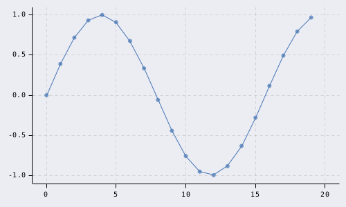
3.2 Position
These keys place a mark. Every mapping key takes an accessor: a keyword (the row’s value under it), a function of the row that computes the value, or either wrapped in (levels/categorical acc), which reads numbers or dates as levels. The plot below computes y as a ratio of two columns:
:mapping:x– The x position, or the values of a strip chart with its levels on y.:y– The y position, or the values of a strip chart with its levels on x.:z– The third coordinate of 3D charts.
(plot/render-image {:data iris
:mapping {:x :petal-length
:y #(/ (double (:petal-width %)) (double (:petal-length %)))}
:charts [(chart/scatter)]
:labels {:y "petal width / length"}}
{:width 500 :height 300})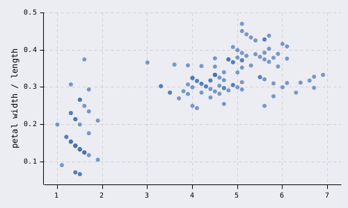
The plots below round petal lengths to whole numbers and read them as numbers (left, a continuous axis) and as levels (right, one band each):
(plot/render-image (plot/arrange [{:data iris
:mapping {:x #(m/round (:petal-length %)) :y :sepal-length}
:charts [(chart/scatter)]}
{:data iris
:mapping {:x (levels/categorical #(m/round (:petal-length %)))
:y :sepal-length}
:charts [(chart/box)]}]
{:columns 2})
{:width 800 :height 300})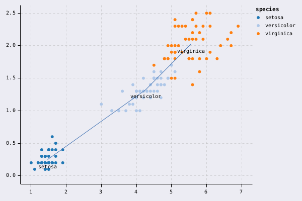
The plot below reads dates as levels: one bar per year, labelled by the year. Without levels/categorical the Year values would sit on a time axis:
(plot/render-image {:data yearly
:mapping {:x (levels/categorical :year) :y :visitors}
:charts [(chart/bar)]}
{:width 600 :height 300})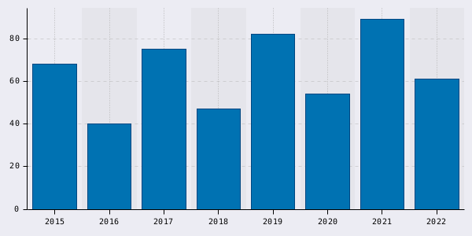
3.3 Intervals and segments
These keys give the other end of a mark spanning two values: a band from :ymin to :ymax, a segment to :xend and :yend. The plot below draws a band from :lo to :hi around the curve and, from every fifth point, a segment down to 0 - a constant end set by the segment option :yend 0, not a mapping:
:mapping:ymin– The lower end of an interval (ribbons, error bars).:ymax– The upper end of an interval.:xend– The x of a segment's end.:yend– The y of a segment's end.
(plot/render-image {:data band
:mapping {:x :t :y :v :ymin :lo :ymax :hi}
:charts [(chart/ribbon)
(chart/line)
(chart/segment {:data (filter #(zero? (mod (long (:t %)) 5)) band)
:mapping {:xend :t :ymin nil :ymax nil}
:yend 0})]}
{:width 500 :height 280})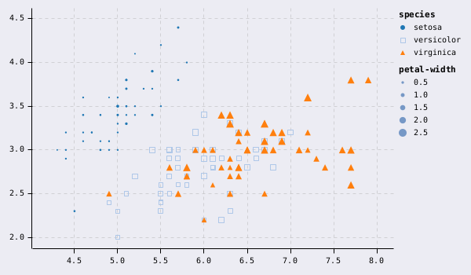
3.4 Prices
These keys give the four prices of a period, which the candlestick chart draws:
:mapping:open– The opening value of a period (candlesticks).:high– The highest value of a period (candlesticks).:low– The lowest value of a period (candlesticks).:close– The closing value of a period (candlesticks).
(plot/render-image {:data prices
:mapping {:x :day :open :open :high :high :low :low :close :close}
:charts [(chart/candlestick)]}
{:width 500 :height 280})
3.5 Aesthetics
These keys style marks by their values, each through its scale and legend (Aesthetics and legends). The plot below maps colour and shape to the species and size to the petal width:
:mapping:color– The colour: levels group the rows, numbers and dates sit on a gradient.:shape– The point shape; its levels group the rows.:size– The mark size: levels group the rows, numbers sit on a size range.:dash– The line dash; its levels group the rows.:pattern– The fill pattern; its levels group the rows.
(plot/render-image {:data iris
:mapping {:x :sepal-length :y :sepal-width :color :species :shape :species :size :petal-width}
:charts [(chart/scatter)]}
{:width 600 :height 350})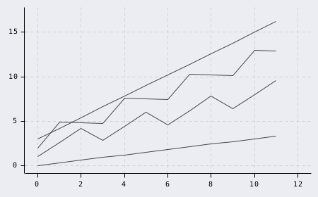
3.6 Groups and order
These keys group rows and order points. Charts that draw one mark per group (lines, areas, densities …) draw each group separately; an aesthetic mapped to levels groups the rows too. The plot below draws a line per walk:
:mapping:group– Groups of rows drawn as separate marks in one style, e.g. a line per group.:order– The order the scatter chart draws its points in, lowest value first, so higher values lie on top.
(plot/render-image {:data walks
:mapping {:x :t :y :v :group :walk}
:charts [(chart/line {:color [70 70 70]})]}
{:width 450 :height 280})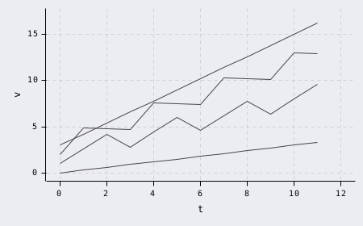
The points below repeat a run from largest to smallest. In data order each run’s small ones are drawn last, on top (left); ordered by size (ascending, the scatter option :descending false, the default) the large ones come last and cover them (right):
(plot/render-image (plot/arrange [{:data overlapping
:mapping {:x :x :y :y :size :s :color :s}
:charts [(chart/scatter)]
:scales {:size {:range [6 40]} :color {:type :categorical}}
:legend false
:labels {:title "data order"}}
{:data overlapping
:mapping {:x :x :y :y :size :s :color :s :order :s}
:charts [(chart/scatter)]
:scales {:size {:range [6 40]} :color {:type :categorical}}
:legend false
:labels {:title ":order :s - larger on top"}}]
{:columns 2})
{:width 900 :height 350})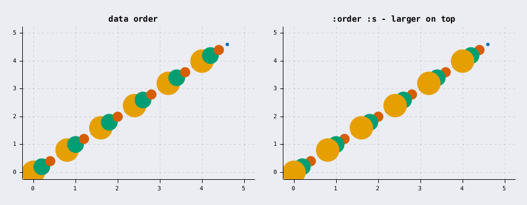
The plot’s :groups key sets what happens to rows whose group value is nil; the bottom line of the walks above is the walk without a number. The plot below drops such rows:
(plot/render-image {:data walks
:mapping {:x :t :y :v :group :walk}
:charts [(chart/line {:color [70 70 70]})]
:groups {:na false}}
{:width 450 :height 280})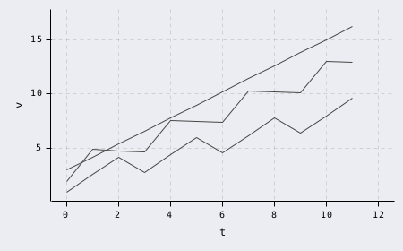
3.7 Facets
These keys split the plot into panels: a wrap of panels or a grid of columns and rows (Facets, multiplots and margins). The plot below draws a panel per species:
:mapping:facet– A panel per value, wrapped into rows (wrap facets).:facet-col– A grid column of panels per value.:facet-row– A grid row of panels per value.
(plot/render-image {:data iris
:mapping {:x :sepal-length :y :sepal-width :facet :species}
:charts [(chart/scatter)]}
{:width 700 :height 280})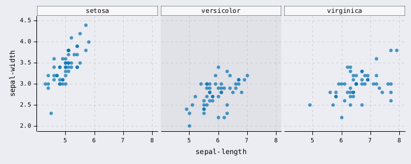
The plot below draws a grid: species as columns, wide and narrow sepals as rows:
(plot/render-image {:data iris
:mapping {:x :petal-length :y :petal-width :facet-col :species
:facet-row #(if (> (double (:sepal-width %)) 3.0) "wide sepal" "narrow sepal")}
:charts [(chart/scatter)]}
{:width 700 :height 400})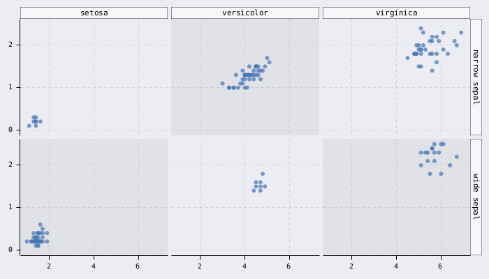
3.8 Values, sets and hierarchies
These keys belong to particular charts. The plot below draws the budget as a treemap and the memberships as a Venn diagram:
:mapping:value– A value the chart reads: a cell's value, a weight, a hierarchy leaf's size.:set– The set name of a membership row (Venn diagrams).:item– The item of a membership row (Venn diagrams).:hierarchy– The levels of a hierarchy, root first (treemap, partition, pack).
(plot/render-image (plot/arrange [{:data budget
:mapping {:hierarchy [:dept :team] :value :cost}
:charts [(chart/treemap)]}
{:data members
:mapping {:set :set :item :item}
:charts [(chart/venn)]}]
{:columns 2})
{:width 800 :height 350})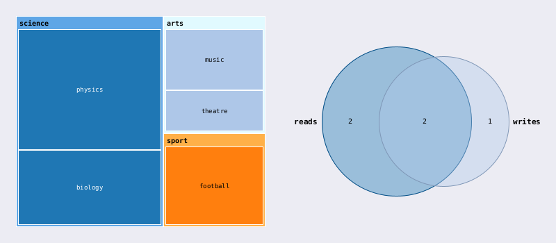
source: notebooks/reference/data_mapping.clj